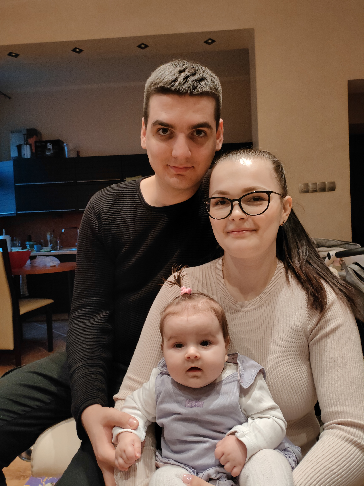
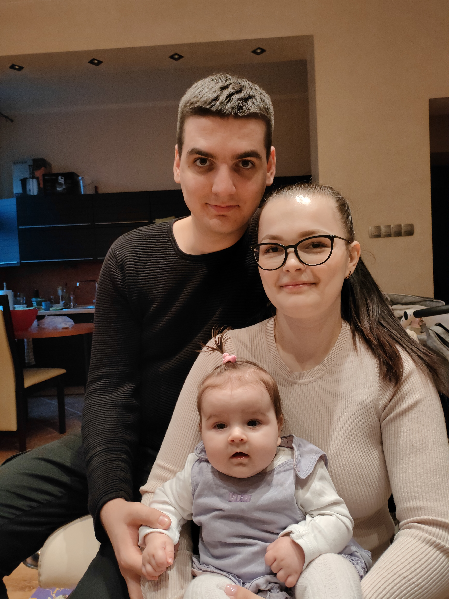

Зміст
Інформація про мене
Привіт, мене звати Сергій. На даний час проживаю в Польщі у місті Глівіце. Працюю на атомобільному заводі. Маю родину - дружину і маленьку дочку. Моє хобі -грати в компютерні ігри такі як World of Warcraft, CS 2.
Люблю подорожувати різними країнами.Подорож-завжди щось нове і цікаве, це зустріч з новими людьми, містами і пам'ятками. Подорож завжди дарує нові емоції і враження, воно дозволяє відволіктися від повсякденного життя і зануритися в Нове інше життя, хоча б на кілька днів.
Найчастіше люди вирушають подорожувати під час відпустки. Одні люди вважають за краще для відпочинку теплі
курорти, південні країни, вони отримують задоволення від виду моря, піску, черепашок і хвиль, ця група людей
отримує задоволення від купання в морі, від теплого сонця і свіжого вітерця, від морських екскурсій. Інші
мандрівники люблять відвідувати країни і міста, щоб познайомитися з новою культурою, побачити як живуть інші
люди, помилуватися відомими на весь світ пам'ятками культури. Треті воліють екстремальні подорожі, їм цікаво
наживо побачити гори, піднятися на них або самостійно освоїти морське дно, сплавитися по річці.
У всіх
нас
різні захоплення і пристрасті, в залежності від них ми вибираємо свій вид подорожі. Одне можна
сказати точно, подорож – це завжди щось яскраве і незабутнє, це море посмішок та гарний настрій.
Фото
Моя родина
 

Відпочинок